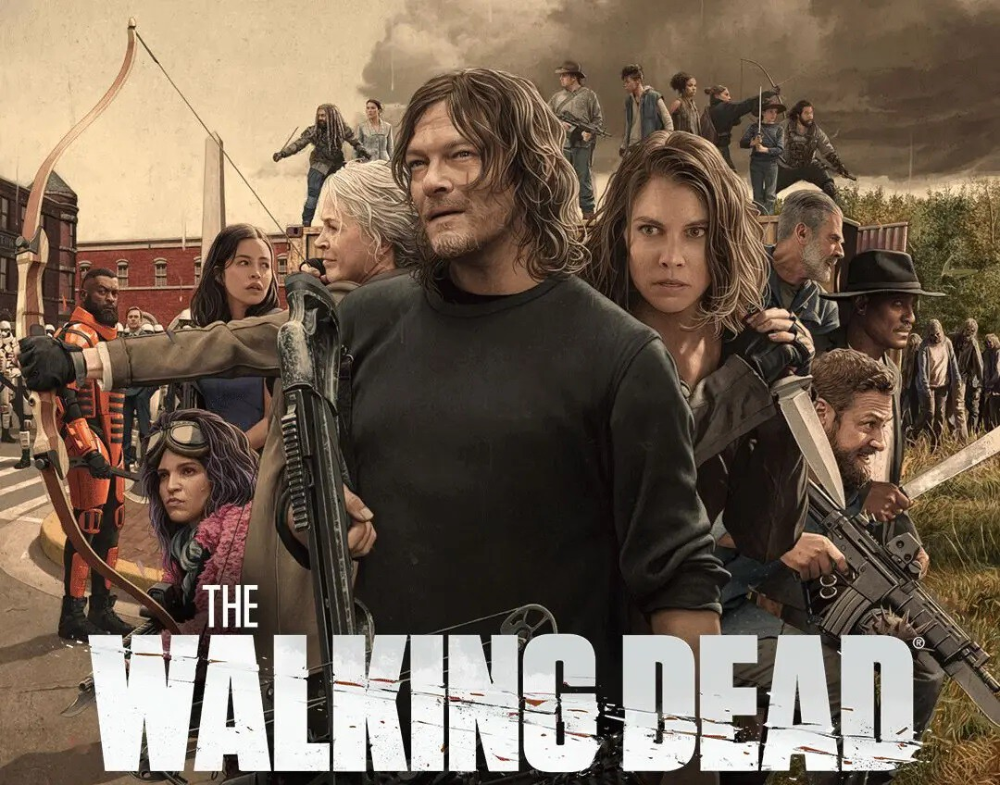
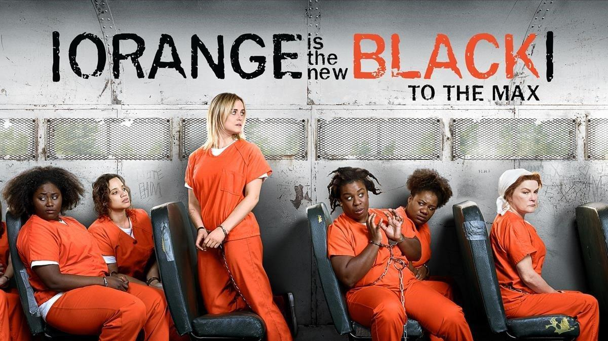

SUITS
Mike es un inteligente estudiante que ha dejado la universidad, pero que es contratado por el brillante Harvey Specter para trabajar en una firma de abogados a pesar de no ser graduado en derecho. La serie trata de cómo estos dos abogados resuelven casos al mismo tiempo que mantienen a salvo el secreto de Mike.
Sus personajes principales son:
-Mike Ross (Personaje Principal)
-Harvey Specter (Abogado, Socio de la firma)
-Louis Litt (Socio de la firma)
-Jessica Pearson (Jefa de la firma de abogados)
-Donna Paulsen (Secretaria de Harvey Specter)
-Rachel Zane(Novia de Mike Ross)

THE WALKING DEAD
La serie presenta un gran elenco como supervivientes de un apocalipsis zombi, tratando de mantenerse con vida bajo la amenaza casi constante de ataques de los zombis sin conciencia, coloquialmente conocidos como "caminantes". Sin embargo, con la caída de la humanidad, estos supervivientes también enfrentan conflictos con otros supervivientes que han formado grupos y comunidades con sus propios conjuntos de leyes y morales, lo que a menudo conduce a conflictos hostiles entre las comunidades humanas.
Sus personajes principales son:
-Rick Grimes (Personaje Principal)
-Daryl Dixon(Mejor amigo de Rick)
-Negan Smith (Antagonista Principal)
-Michonne (Esposa de Rcik)
-Gabriel Stokes (Sacerdote)
-Maggie Greene (Amiga del grupo)

ORANGE IS THE NEW BLACK
Piper Chapman es una chica de clase acomodada que ingresa en una cárcel de mujeres a causa de un error del pasado. Allí se encuentra con su exnovia y traficante de droga, Alex Vause quien pondrá en peligro el compromiso de boda con su novio Larry.
Sus personajes principales son:
-Piper Chapman (Personaje Principal)
-Alex Vause (Ex de Piper Chapman)
-Sam Healy (Oficial Correccional)
-Galina "Red" Reznikov (Cocinera)
-Suzanne "Ojos locos" Warren (Presa)
-Nicky Nichols (Presa)

LUCIFER
Lucifer, el demonio mismo, cansado de la vida que actualmente lleva en el infierno y en busca de aventura y novedad, decide dejar su reino para dirigirse a Los Ángeles, California. Una vez en la gran ciudad tiene la gran idea de abrir un club nocturno llamado Lux, que representa todo lo que a él le gusta.
Sus personajes principales son:
-Lucifer
-Arcángel Miguel
-Detective Chloe Decker
-Mazikeen
-Dra. Linda Martin (Psicologa)
-Ella Lopez (Cientifica Forense)

YOU
un gerente de librería y asesino en serie de Nueva York que cuando se enamora desarrolla rápidamente una obsesión extrema, tóxica y delirante. Es profundamente obsesivo y peligrosamente seductor mueve cielo y tierra para instalarse en la vida de aquellas personas por quienes se siente cautivado.
Sus personajes principales de la primera temporada son:
-Joe Goldberg (Personaje Principal)
-Guinevere Beck (Obsesion de Joe)
-Paco (Joven vecino de Joe)
-Candace Stone (Exnovia de Joe)
-Peach Salinger (Una socialité rica e influyente y la mejor amiga de Beck)